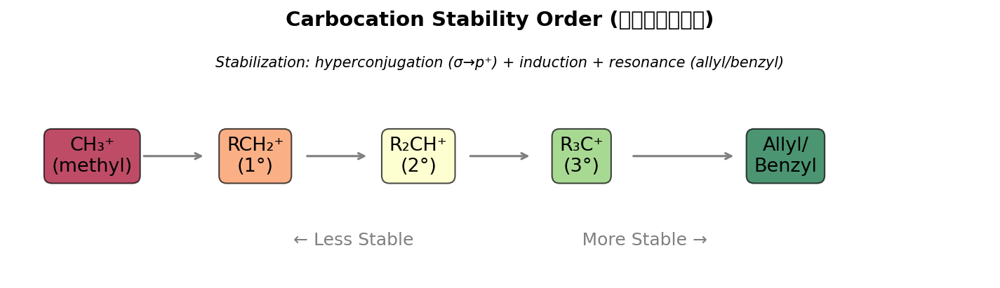
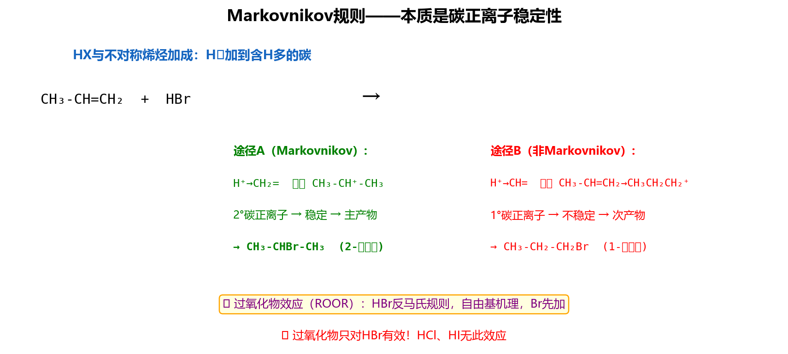
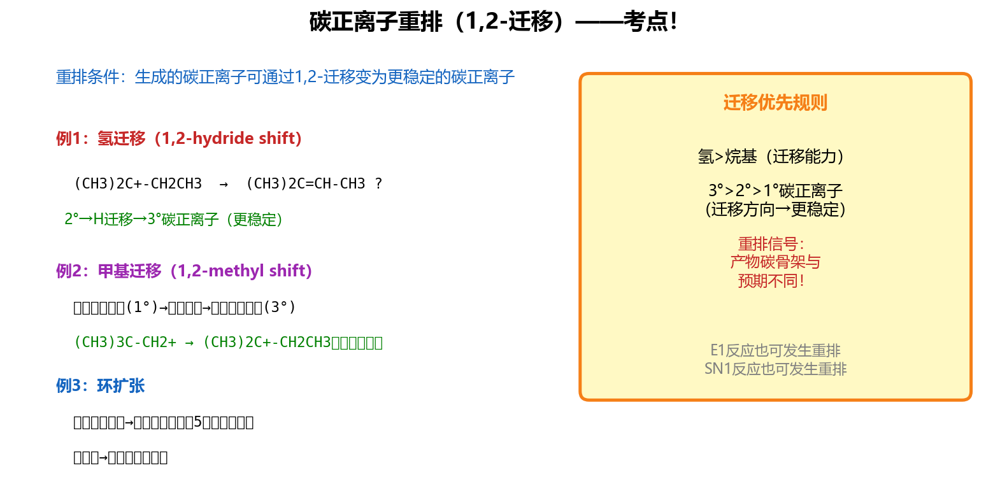
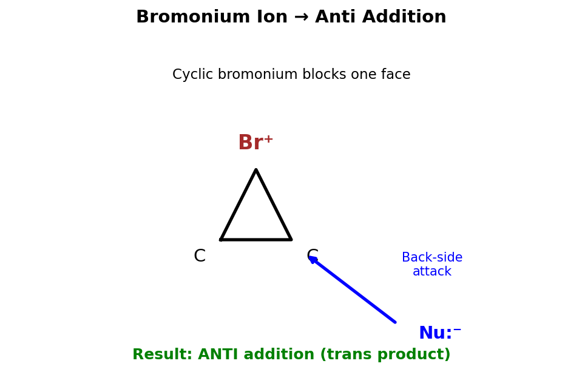
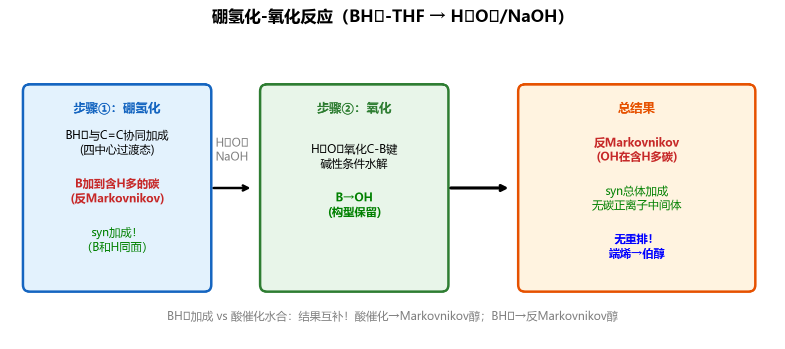
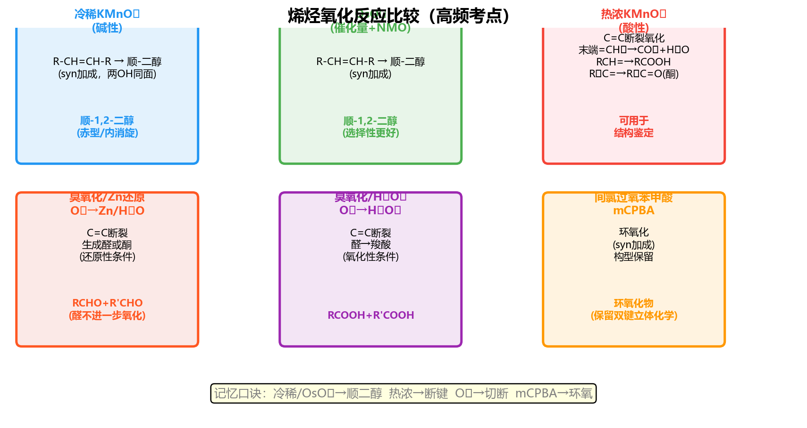

①原子序数大者优先 ②第一个原子相同则比较下一个 ③双键按两个单键计算
Z(zusammen)：两个优先基团在同侧；E(entgegen)：在异侧
氢化热越小 → 烯烃越稳定。取代基越多 → 超共轭效应越强 → 越稳定
稳定性顺序：四取代 > 三取代 > 二取代(反式>顺式) > 一取代 > 无取代
①沸点随分子量增大而升高；低级烯烃(C₂~C₄)为气态，C₅以上为液态
②Z-异构体沸点略高于E-异构体：Z式偶极矩较大，分子间作用力更强
③难溶于水，易溶于有机溶剂（非极性分子，"相似相溶"）
电负性：Csp > Csp² > Csp³
原因：s成分越多，电子越靠近原子核，对电子束缚力越强（表现为电负性越大）
应用：乙炔C-H的酸性 > 乙烯C-H > 乙烷C-H
不对称烯烃加HX：H加到含H较多的双键碳 → 生成更稳定的碳正离子
本质：经过更稳定的碳正离子中间体（能量更低的过渡态）
碳正离子稳定性：

苄基 ≈ 烯丙基 > 3° > 2° > 1° > CH₃⁺ > 乙烯基
稳定化因素：超共轭(烷基)、共振(苄基/烯丙基)、杂原子孤对电子

①1,2-H迁移：H从邻碳带着电子对迁移到正电荷碳
②1,2-甲基迁移：甲基(或其他烷基)带电子对迁移
③方向：总是从不稳定→更稳定碳正离子
④环扩张：四/五元环→五/六元环(张力释放)
①H⁺加到C1(马氏规则) → 在C2形成2°碳正离子
②C3上甲基1,2-迁移到C2 → 变为3°碳正离子
③Cl⁻进攻3°碳 → 产物为2-氯-2,3-二甲基丁烷

Step 1：确定初始碳正离子（由亲电加成第一步生成）
Step 2：检查邻碳(β-碳)上是否有可迁移的H或烷基
Step 3：判断迁移后碳正离子是否更稳定（2°→3°？或释放环张力？）
Step 4：若更稳定则重排发生 → 亲核试剂进攻重排后的碳正离子 → 写出产物

①Br₂被π电子极化 → Br⁺形成三元环桥接（溴鎓离子）
②Br⁻只能从三元环背面(anti)进攻 → 两个Br在双键两侧
③环己烯加Br₂ → 反式-1,2-二溴环己烷（两个Br为trans-diaxial）
Cl原子较小，不能有效形成三元环 → 经开放碳正离子中间体
结果：Cl₂加成的立体选择性不如Br₂严格，可能得到顺式+反式混合物
烯烃 + Br₂/H₂O → 溴醇(halohydrin)
机理：先形成溴鎓离子 → H₂O(而非Br⁻)作亲核试剂进攻
区域：OH加到取代多的碳(马氏)，Br加到取代少的碳
立体：仍为反式加成（OH和Br在两侧）
烯烃 + H₂SO₄(浓) → 硫酸氢酯(ROSO₃H) → 水解 → 醇 + H₂SO₄
总结果：马氏加水（H加到含H多的碳，OH加到含H少的碳）
烯烃活性与硫酸浓度的关系：烷基取代越多 → 形成碳正离子越稳定 → 所需H₂SO₄浓度越低
①烯烃 + 醇(H⁺催化) → 醚（马氏方向，碳正离子被ROH捕获）
②烯烃 + 羧酸(H⁺催化) → 酯（碳正离子被RCOOH捕获）
机理与HX加成类似：H⁺先加到双键形成碳正离子 → 亲核试剂(ROH或RCOOH)进攻碳正离子
F₂ > Cl₂ > Br₂ > I₂
①引发：ROOR → 2RO· → RO· + HBr → ROH + Br·
②增长：Br·加到含H多的碳(因为生成更稳定自由基) → 碳自由基再夺HBr的H
③终止：自由基偶合
结果：反马氏加成 — Br加到含H多的碳，H加到含H少的碳
①反马氏：OH加到含H多的碳（B先加到位阻小的碳）
②顺式加成(syn)：H和OH加到双键同侧（四元环过渡态协同反应）
③无重排：不经过碳正离子中间体


| 试剂/条件 | 产物 | 立体化学 | 特点 |
|---|---|---|---|
| KMnO₄ 稀冷/中性 | 邻二醇(cis) | 顺式加成 | 双键不断裂;可做检验 |
| OsO₄ + NMO | 邻二醇(cis) | 顺式加成 | 催化量OsO₄;选择性好 |
| KMnO₄ 浓热/酸性 | 羧酸 + 酮 | — | 双键断裂氧化 |
| O₃ → Zn/H₂O(还原) | 醛 + 酮 | — | 臭氧化-还原裂解 |
| O₃ → H₂O₂(氧化) | 羧酸 + 酮 | — | 臭氧化-氧化裂解 |
| mCPBA(过氧酸) | 环氧化物 | 顺式加成 | 构型保持;协同机理 |
C=C + O₃ → 臭氧化物(molozonide) → 重排为ozonide → 还原裂解得醛/酮
应用：已知产物(醛/酮)可反推原来的烯烃结构（两个C=O拼回C=C）
将两个羰基碳用双键连接：(CH₃)₂C=CH₂ → 2-甲基丙烯(异丁烯)
特点：协同机理(一步完成)，顺式加成，双键上原来的顺反构型完全保持
富电子烯烃反应更快（取代越多越快）
H₂/Pd(或Pt、Ni) → 顺式加成（两个H从金属表面同侧加入）
氢化热比较 → 取代越多的烯烃越稳定 → 氢化越慢（放热越少）
烯丙基自由基有p-π共轭稳定化（电子离域到相邻π体系）
NBS的作用：维持低浓度Br₂ → 有利于取代(自由基链反应)而非加成
例：CH₃-CH=CH-CH₃ (2-丁烯) 在自由基条件(NBS/hν)下：
①C1和C4位的H均为烯丙位氢 → 断裂后形成烯丙基自由基(p-π共轭稳定)
②反应位点：两端的α-H均可被取代 → 产物为 CH₂Br-CH=CH-CH₃ 和 CH₃-CH=CH-CH₂Br
③对称烯烃(如2-丁烯)→两端等价→只得一种产物
Grubbs催化剂：两个烯烃交换双键两侧的基团
R¹CH=CHR² + R³CH=CHR⁴ → R¹CH=CHR³ + R²CH=CHR⁴
n CH₂=CH₂ → [-CH₂-CH₂-]n（聚乙烯）
①自由基聚合（高压法）：
②Ziegler-Natta催化聚合（低压法）：
1,3-丁二烯：四个p轨道相互重叠形成π-π共轭体系，电子离域
稳定性：共轭二烯 > 隔离二烯（氢化热差值≈16 kJ/mol = 共轭稳定化能）
构象：
低温(-80°C)，动力学控制：1,2-加成产物为主 → 活化能较低(Br⁻进攻较近的C2更快)
高温(40°C以上)，热力学控制：1,4-加成产物为主 → 产物更稳定(内烯烃，取代更多)
| 条件 | 主产物 | 原因 |
|---|---|---|
| 低温(-80°C)、短时间 | 1,2-加成产物 | 活化能低，生成速率快（动力学控制） |
| 高温(40°C+)、长时间 | 1,4-加成产物 | 产物热力学更稳定，平衡有利（热力学控制） |
共轭二烯（4π电子）：必须能采取s-cis构象；富电子二烯反应更快
亲二烯体（2π电子）：含吸电子基团(如-CHO, -COOR, -COR, -CN, -NO₂)的烯烃
反应特点：
1,3-丁二烯 + 马来酸酐 → 四氢邻苯二甲酸酐（经典DA反应）
1,3-丁二烯 + 乙烯(高温高压) → 环己烯
环戊二烯(天然s-cis) + 马来酸酐 → 降冰片烯二酸酐(endo为主)
当亲二烯体有吸电子取代基时，产物中该取代基优先处于endo位（动力学产物）
原因：过渡态中吸电子基与二烯的次级轨道重叠（secondary orbital interaction）有利
不对称二烯 + 不对称亲二烯体 → 优先形成"1,2-"或"1,4-"取代的环己烯（类似邻/对位取向）
ROH → (H₂SO₄, 170°C) → 烯烃 + H₂O
机理：①醇质子化 → ②失水生成碳正离子 → ③消除β-H得烯烃
Zaitsev(扎依采夫)消除规则：消除反应优先生成取代最多（最稳定）的烯烃
碳正离子中间体可从C1或C3失去H：
失去C3的H → 2-丁烯（更稳定，双取代烯烃）= 主产物(Zaitsev规则)
失去C1的H → 1-丁烯（单取代烯烃）= 次产物
醇脱水活性：3°醇 > 2°醇 > 1°醇（碳正离子越稳定越容易形成）
RX + KOH/EtOH(强碱/醇溶液) → 烯烃 + KX + H₂O
条件：强碱(KOH、NaOEt等) + 醇溶剂（促进消除而非取代）
区域选择性：遵循Zaitsev规则 → 优先生成取代最多的烯烃
立体要求：E2为反式共平面消除 → H和X必须处于anti-periplanar构象
R(X)CH-CH(X)R' + Zn → 烯烃 + ZnX₂
试剂：锌粉/乙醇 或 NaI/丙酮
特点：条件温和，不经过碳正离子（不重排），可保留原有双键位置
应用：常用于炔烃加卤→邻二卤代物→脱卤得烯烃的合成路线中保护/去保护双键
| 反应 | 区域选择性 | 立体选择性 | 中间体 |
|---|---|---|---|
| HX加成 | 马氏(Markovnikov) | 无特定立体 | 碳正离子(可重排) |
| H₂O/H⁺加成 | 马氏 | 无特定立体 | 碳正离子(可重排) |
| Br₂加成 | — | 反式(anti) | 溴鎓离子 |
| Br₂/H₂O | OH在多取代碳 | 反式(anti) | 溴鎓离子 |
| HBr/ROOR | 反马氏 | 无特定立体 | 自由基 |
| BH₃→H₂O₂ | 反马氏 | 顺式(syn) | 四元环过渡态 |
| H₂/Pt | — | 顺式(syn) | 表面吸附 |
| OsO₄(KMnO₄稀) | — | 顺式(syn) | 环酯中间体 |
| mCPBA环氧化 | — | 顺式(syn) | 协同(蝶形) |
| 反应 | 产物 | 区域 | 立体 | 机理要点 |
|---|---|---|---|---|
| (a) +HBr | 1-溴-1-甲基环己烷 | Markovnikov | 无(碳正离子) | H+加到多H碳→3°碳正离子→Br−进攻 |
| (b) +HBr/ROOR | trans-1-溴-2-甲基环己烷(反Mark) | anti-Markovnikov | 无选择性 | 自由基加成：Br•加到少取代碳→2°自由基(更稳定) |
| (c) +Br2 | trans-1,2-二溴环己烷 | — | anti加成 | 溴鎓离子中间体→背面进攻→反式 |
| (d) +H2O/H+ | 2-丙醇(异丙醇) | Markovnikov | 无(碳正离子) | H+加到C1→2°碳正离子→H2O进攻C2 |
| (e) 硼氢化-氧化 | trans-2-甲基环己醇 | anti-Markovnikov | syn加成 | BH3从位阻小面syn加成→氧化保持构型 |
| (f) KMnO4冷稀 | cis-1,2-环己二醇 | — | syn加成 | 环状锰酸酯中间体→顺式二醇 |
| (g) O3→Zn | 2×CH3CHO(乙醛) | — | —(断裂) | 臭氧切断C=C→两个醛(对称烯) |
| (h) mCPBA | 环氧环己烷(1,2-环氧) | — | syn加成 | 蝶式过渡态→同侧加氧 |
| (i) NBS,hν | 3-溴环己烯(烯丙位溴代) | 烯丙位 | — | 烯丙基自由基→NBS提供低浓度Br2 |
| (j) H2/Pd | 正己烷 | — | syn加成 | 金属表面同侧递氢 |
(a) 3,3-二甲基-1-丁烯 + HCl：(CH3)3C-CH=CH2
H+加到C1(Mark) → C2上形成2°碳正离子：(CH3)3C-+CH-CH3
邻碳有叔丁基→甲基1,2-迁移 → 3°碳正离子：(CH3)2C+-CH(CH3)-CH3
Cl−进攻3°碳 → 2-氯-2,3-二甲基丁烷(重排产物)。
也有少量不重排产物：2-氯-3,3-二甲基丁烷。
(b) 3-甲基-1-丁烯 + H2O/H+：CH2=CHCH(CH3)2
H+加到C1 → C2上2°碳正离子：CH3-+CH-CH(CH3)2
1,2-氢迁移 → 3°碳正离子：CH3CH-+C(CH3)2
H2O进攻 → 2-甲基-2-丁醇(重排产物，主要)。
不重排产物：3-甲基-2-丁醇(次要)。
(c) 乙烯基环丙烷 + HBr：
H+加到末端=CH2 → 形成与环丙烷相邻的碳正离子。
环丙烷C-C键迁移(环扩张) → 环丁基碳正离子(更稳定，释放环张力)。
Br−进攻 → 溴甲基环丁烷（环扩张产物）。
(a) cis-2-丁烯 + Br2（anti加成）：
cis-2-丁烯两个CH3同侧。Br2 anti加成→两个Br从异侧加上。
结果：两个CH3同侧+两个Br异侧→产物为(2R,3S)+(2S,3R)=meso-2,3-二溴丁烷。
（单一非对映体，无旋光性！）
(b) trans-2-丁烯硼氢化-氧化（syn加成，anti-Mark→此处对称无区域问题）：
trans-2-丁烯两个CH3异侧。BH3 syn加成：B和H从同侧加上→氧化后OH在B的位置。
产物：OH和H在同侧加成→得到(2R,3R)+(2S,3S)=外消旋(±)-2-丁醇。
（syn加成到trans烯→threo产物=外消旋体）
(c) 环氧化→酸水解（总效果=anti二醇化）：
mCPBA syn加环氧→ H3O+水解环氧为反式开环(SN2背面进攻)。
总立体化学：anti加成→产物为trans-1,2-二醇。
对1-甲基环己烯→trans-2-甲基-1,2-环己二醇（OH和CH3为trans）。
| 试剂 | 1-己烯 | 环己烷 | 环己烯 | 1-己炔 |
|---|---|---|---|---|
| Br2/CCl4 | 褪色 | 不褪色 | 褪色 | 褪色 |
| KMnO4(冷稀) | 褪色+棕色沉淀 | 无变化 | 褪色+棕色沉淀 | 褪色+棕色沉淀 |
| AgNO3/NH3(银氨) | 无 | 无 | 无 | 白色沉淀(炔银) |
方案：①先用AgNO3/NH3→白色沉淀者为1-己炔(末端炔)。
②余三者用Br2/CCl4→不褪色者为环己烷。
③1-己烯和环己烯都使Br2褪色，用臭氧分解区别：1-己烯→一个醛+甲醛(两种不同产物)；环己烯→一个二醛(单一产物)。或用KMnO4酸性热→1-己烯给戊酸+CO2，环己烯给己二酸。
(a) 丙烯 → 1-丙醇（anti-Markovnikov水合）
直接酸催化水合→2-丙醇(Mark)。需要anti-Mark→用硼氢化-氧化：
CH3CH=CH2 → BH3·THF → H2O2/NaOH → CH3CH2CH2OH ✓
(b) 环己烯 → trans-1,2-环己二醇（anti二醇化）
syn二醇化(OsO4)→cis二醇。需要anti→环氧化→酸性水解：
环己烯 → mCPBA → 环氧环己烷 → H3O+ → trans-1,2-环己二醇 ✓
(c) 1-丁烯 → 2-丁酮
2-丁酮=CH3COCH2CH3。需要Markovnikov水合到C2得2-丁醇，再氧化：
CH2=CHCH2CH3 → H2O/H+(Mark) → CH3CH(OH)CH2CH3(2-丁醇) → CrO3/H+(Jones) → CH3COCH2CH3 ✓
步骤1 引发：异丁烯(CH2=C(CH3)2) + H+ → (CH3)3C+（叔碳正离子，Markovnikov）
步骤2 加成：(CH3)3C+ + CH2=C(CH3)2 →
碳正离子亲电进攻第二个异丁烯的π键（进攻末端CH2=更有利，在更取代碳上形成正电荷）：
(CH3)3C-CH2-+C(CH3)2（新的3°碳正离子）
步骤3 消除(E1)：碳正离子失去H+→两种可能的消除方向：
路线A：失去β-H（从-CH2-上）→ (CH3)3C-CH=C(CH3)2 = 2,4,4-三甲基-2-戊烯（Zaitsev产物，更取代烯烃，热力学稳定）
路线B：失去β-H（从其中一个CH3上）→ (CH3)3C-CH2-C(CH3)=CH2 = 2,4,4-三甲基-1-戊烯（较少取代烯烃）
产物比：Zaitsev产物(2-戊烯)为主，1-戊烯为次。实际工业上二者都有。